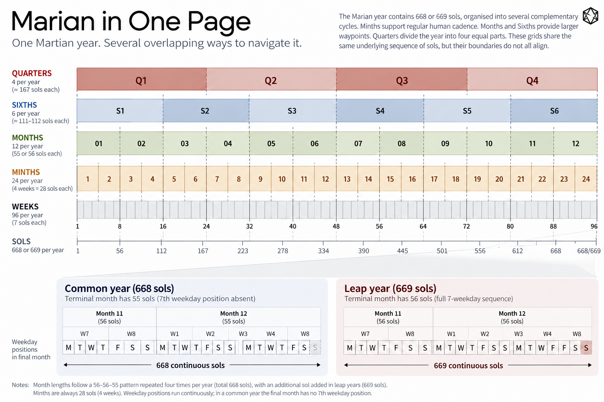

SUMMARY
9) The Marian Calendar in One Page
Mars has an almost Earth-length day but a year nearly twice as long.
That breaks several useful relationships in the Earth calendar.
Marian's answer is to separate the jobs.

Detailed figure description
A wide annual overview shows four quarter bands across twelve Marian months and twenty-four paired minths. Beneath, two small weekly grids contrast a normal 56-sol month with a shortened 55-sol month. The image emphasizes 12 annual month positions, 24 shorter operating minths, 668 or 669 physical sols per year, and the optional final Sunsol in leap years.
Editorial note: this is a descriptive summary, not an independently verified transcription of every diagram label. Refer to the surrounding text and the Marian technical specification for authoritative numeric details where applicable.
1 sol
The Martian civil day.
7 weekday positions
The familiar short recurring rhythm.
1 minth = 27–28 sols
About four weeks. The short operating cadence.
1 month = 2 minths = 55–56 sols
Twelve months divide the Martian year into twelve recognisable annual positions.
1 Sixth = 2 months
Six medium-range periods across the year.
1 quarter = 3 months
Four large annual divisions.
The common-year rhythm is:
56 – 56 – 55 | 56 – 56 – 55 | 56 – 56 – 55 | 56 – 56 – 55
giving:
668 sols
A leap year adds one final Sunsol to Month 12:
669 sols
The rule is:
Odd years leap. Tens leap. Hundreds do not.
The regular civil year is anchored to Mars at:
Ls = 15°
The idea underneath everything else is simple:
Minths provide cadence. Months provide annual orientation. Sixths provide a middle distance. Quarters divide the year.
The year belongs to Mars.